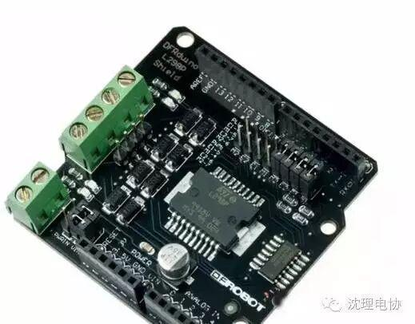
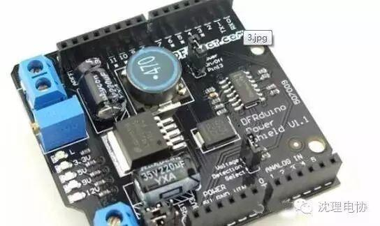
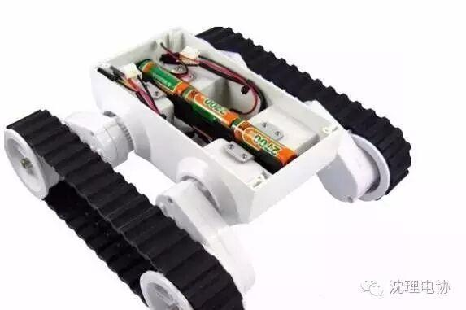
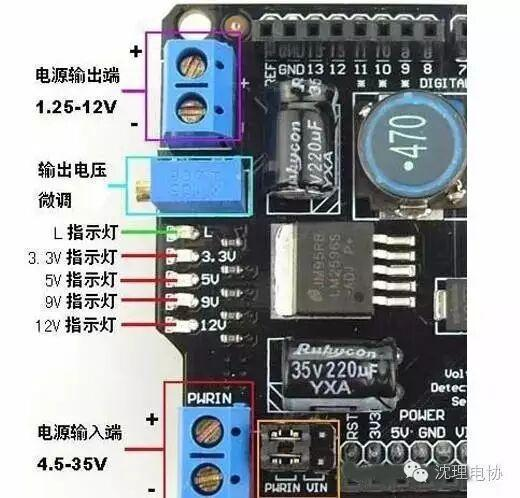
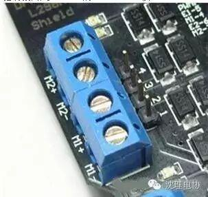
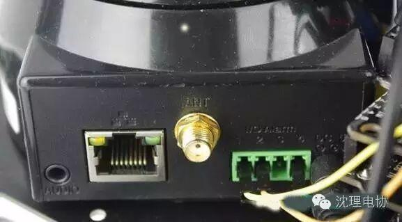
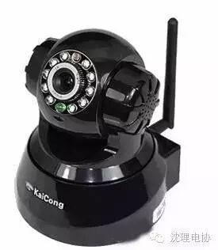
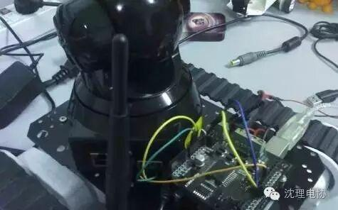
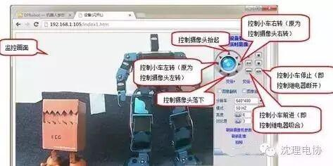
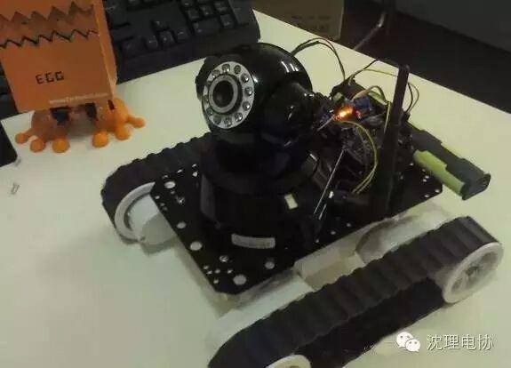

利用网络摄像头的报警输出端口的继电器开开合合形成一个二进制的编码，然后用一个Arduino来进行译码，扩展了网络摄像头的I/O口
1、网络摄像头
2、Arduino控制板
3、电机驱动扩展板
4、Arduino稳压板（为了保证网络摄像头稳定的电源）
5、10k电阻（端口上拉）及面包线
6、小车底盘、( 2WD / 4WD)（含直流电机、电源）
L298P电机驱动扩展板

稳压扩展板
网络摄像头我是在网上为了保证摄像头使用电压
的稳定，我没有使用Arduino板上的5V电压，而是单独用了一个稳压扩展板。该扩展板在小车调试前期可不用，直接用稳压器给网络摄像头提供电源。小车
底盘( 2WD /4WD)是路虎5履带底盘。最后找了一个直插的10k电阻，再准备一些面包线，这样所有的材料都准备好了。

稳压扩展板的使用很简单，我们先来简单介绍一下。如下图的标识，将电池接到扩展板的输入端子，输入端子旁边的两个跳线帽要跳到PWRIN位置；然后调节输出电压微调电位器，用万用表测量电源输出端电压使其稳定在5V；最后将网路摄像头电源接口与扩展板电源输出端连在一起。

电机驱动板的使用大家可能都比较熟悉了，本人
这里再简单提两句。先要选择控制方式，这个制作中使用的是PWM方式；再者就是连接直流电机，如下图所示的连接端子。M1+和M1—连接一个直流电
机，M2+和M2—连接另一个直流电机，电机驱动板占用Arduino的4、5、6、7脚。
最后我们重点来说一下Arduino控制板与
网络摄像头的连接。在网上的那篇文章中作者用摄像头公司提供的插件做了一个运行在PC端的软件，以此来控制继电器产生宽窄不一的脉冲。这里我没有采用这种
方式，PC软件的制作也不是谁都能完成的。本人采用的方式是直接用Arduino捕获网络摄像头内控制步进电机的信号，拆掉了网络摄像头中左右转的步进电
机，用摄像头本身左右旋转的信号来控制小车的左右转，而用继电器的吸合来控制小车的前进与停止。
开始拆摄像头！
导线引出后，我们合上网络摄像头的底盖，来看看它背面的接口。如下图所示，在摄像头后面最中间的是天线接口，天线右侧的4个I/O口就是报警输出端口，4
个I/O用1、2、3、4标识，其中1、2是报警输出端口，分别接到了继电器两端，3为报警输入端口（此端口未用），4为摄像头内容电路的数字地。
这3个I/O（不包括3号I/O）加上之
前的A+和B+总共5条线，与Arduino的连接关系如下图所示。连接网络摄像头内报警继电器一端的2脚连到Arduino的GND，而连接继电器另一
端的1脚连到Arduino的9脚，同时在9脚加上10k的上拉电阻，这样当继电器未吸合时，9脚因为上拉电阻，所以状态为高；而当继电器吸合时，9脚接
GND，所以状态为低。网络摄像头报警接口的4脚也要连接到Arduino的GND，以使网络摄像头控制板与Arduino共地。A+与B+分别连接到
Arduino的2、3脚，这两个脚如果连反了可以在程序中调整

步进电机的控制方式是不断的变化A、B两相上的电压大小和电流方向，这样在A+和B+上就会产生一串脉冲。使用示波器观察我们发现，当发送左转的命令时，首先在A+上产生脉冲，而当发送右转的命令时，首先在B+上产生脉冲，效果如下图所示。
我们就利用A+、B+上的信号差异，以及继电器的吸合来实现对小车的控制。Arduino端用到了外部中断功能，2脚对应Arduino外部中断0，3脚对应Arduino外部中断1，详细代码如下:/**********************************************捕获步进电机信号控制直流电机使用Arduino的外部中断created 2013by Nille**********************************************/int InterruptA = 1; //定义InterruptA 为外部中断1，也就是引脚3int InterruptB = 0; //定义InterruptB 为外部中断0，也就是引脚2volatile int state = 0; //定义state用来保存小车左右转的状态，//1为左转，2为右转void setup(){//2、3脚为外部中断0、1，用来捕获A+、B+上的信号pinMode(2, INPUT);pinMode(3, INPUT);//4、5、6、7用于控制直流电机pinMode(4, OUTPUT);pinMode(5, OUTPUT);pinMode(6, OUTPUT);pinMode(7, OUTPUT);//9脚用于检测继电器的状态pinMode(9, INPUT);// 监视外部中断输入引脚的变化attachInterrupt(InterruptA, stateInterruptA, FALLING);attachInterrupt(InterruptB, stateInterruptB, FALLING);}void loop(){if(digitalRead(2) == LOW || digitalRead(3) == LOW){if(state == 1){//state为1时小车左转digitalWrite(4,LOW);digitalWrite(7,HIGH);analogWrite(5,240);analogWrite(6,240);}else if(state == 2){//state为2时小车右转digitalWrite(4,HIGH);digitalWrite(7,LOW);analogWrite(5,240);analogWrite(6,240);}else{//小车停止analogWrite(5,0);analogWrite(6,0);}}else{state = 0;//在继电器吸合的情况下if(digitalRead(9) == 0){//小车前进digitalWrite(4,HIGH);digitalWrite(7,HIGH);analogWrite(5,250);analogWrite(6,250);}else{//小车停止analogWrite(5,0);analogWrite(6,0);}}}//中断函数stateInterruptA，当A+先收到脉冲则小车左转void stateInterruptA(){if(state == 0)state = 1;}//中断函数stateInterruptB，当B+先收到脉冲则小车左转void stateInterruptB(){if(state == 0)state = 2;}可以在代码中添加一些Serial.println()的语句来查看一下程序在我们控制网络摄像头时能够做出正确的相应。代码调试完成后，如图下图所示，将Arduino控制板、电机驱动扩展板、稳压扩展板层叠的插在一起固定在小车的后面，前方安装好网络摄像头。
完成后的wifi小车上电工作正常后，如图下
图所示。wifi小车的控制与网络摄像头的控制方式类似，打开电脑端的浏览器，在地址栏中输入网络摄像头的IP地址（不确定IP地址的话可以使用产品中附
带的IP网络摄像头搜索软件搜一下）进入监控界面，就使用界面右侧的按钮来控制这部简易的wifi小车。另外该摄像头还有一个厂家分配的唯一域名，只要在
我们的路由器端简单配置就能够实现广域网条件下的小车控制了。
PS：突然发现美图秀秀很好玩 所以 虚化背景 没按到 按了 橡皮 结果有一幅图被檫去一部分
因为原图片过大 所以载图

信息部/黄治勇